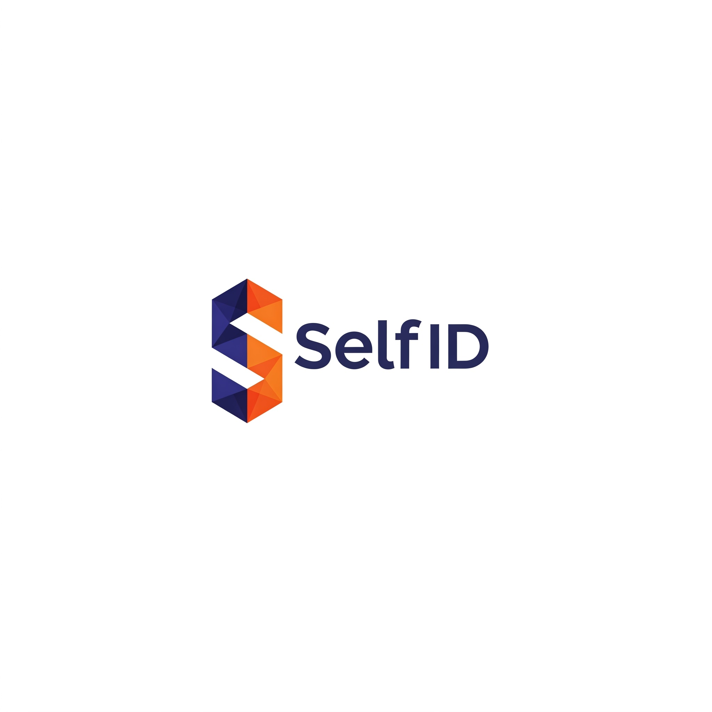

Découvrez comment SelfID révolutionne l’identité numérique décentralisée et la monétisation des données personnelles.
Commencer la lectureSelfID est une plateforme d’identité numérique décentralisée basée sur la blockchain, conçue pour redonner aux utilisateurs le contrôle de leurs données personnelles. Dans un monde où les grandes entreprises technologiques exploitent les données sans consentement, SelfID propose une solution basée sur les standards W3C (DID, Verifiable Credentials) pour garantir souveraineté, sécurité et monétisation.
La centralisation des données personnelles entraîne des risques de piratage, des violations de la vie privée et une absence de compensation pour les utilisateurs. De plus, la gestion des identités numériques est fragmentée, obligeant les utilisateurs à jongler avec de multiples comptes et mots de passe.
SelfID permet aux utilisateurs de :
SelfID génère des revenus via :
SelfID est positionné pour devenir un leader de l’identité numérique décentralisée, en combinant souveraineté des données, monétisation et simplicité d’utilisation. Rejoignez-nous pour façonner l’avenir du Web3.
Contribuer au projet